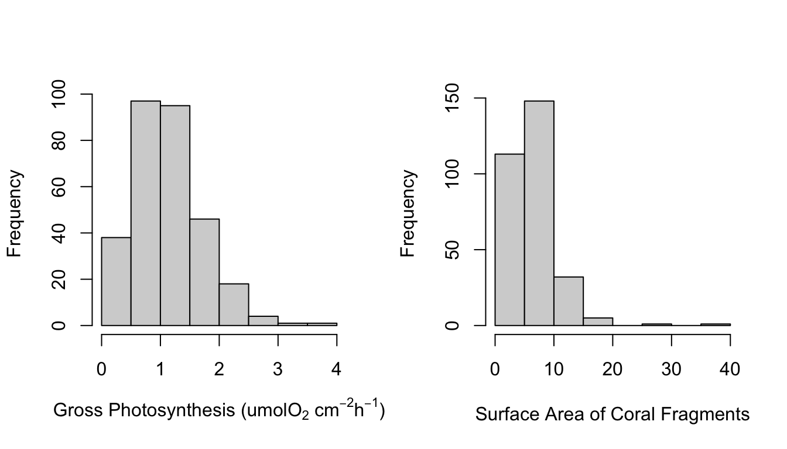
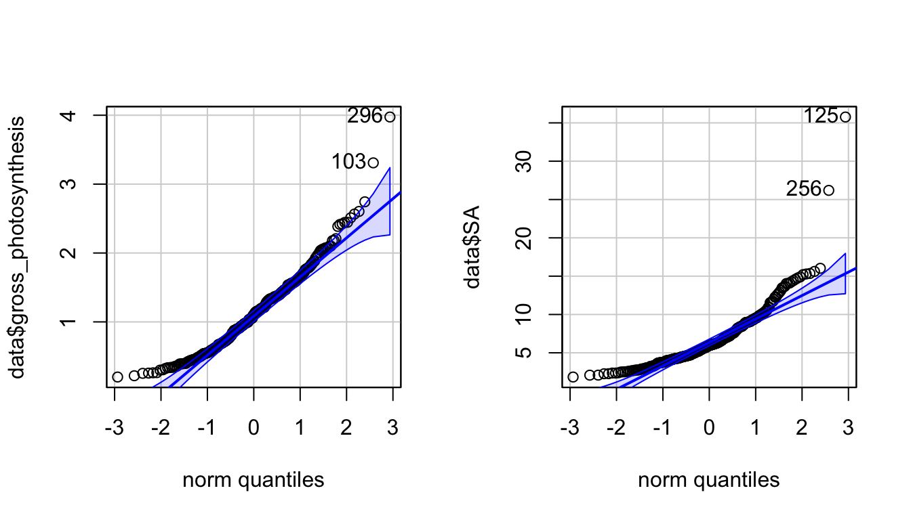
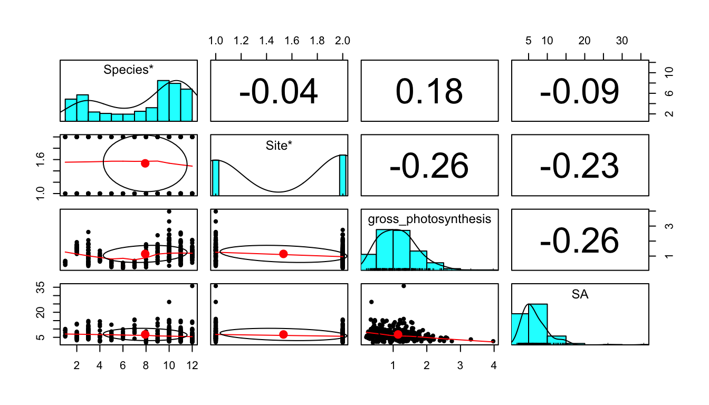
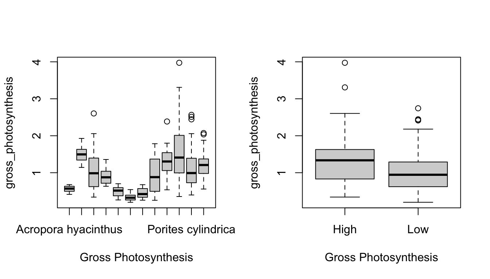
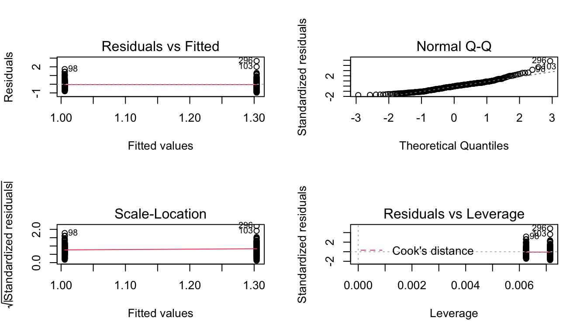
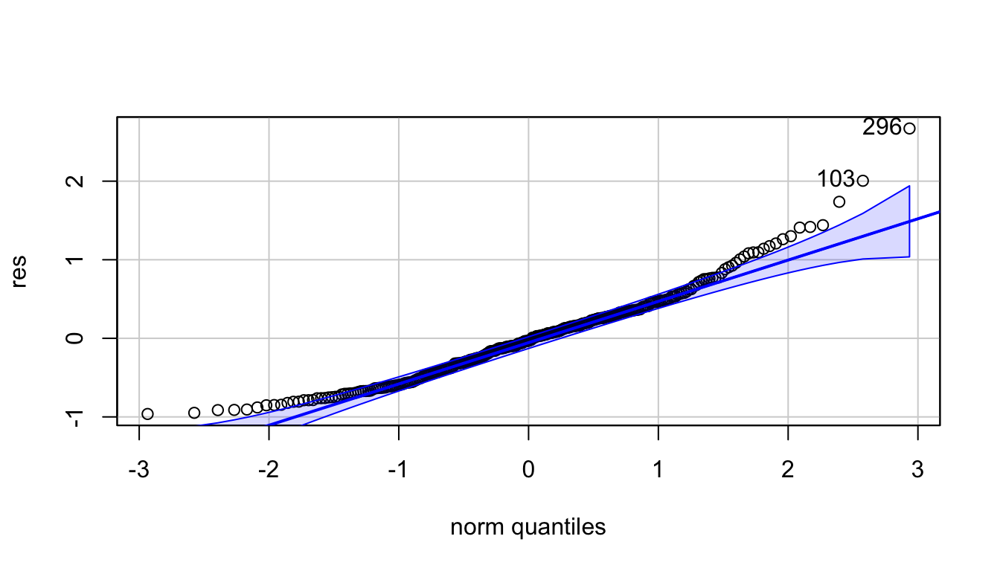
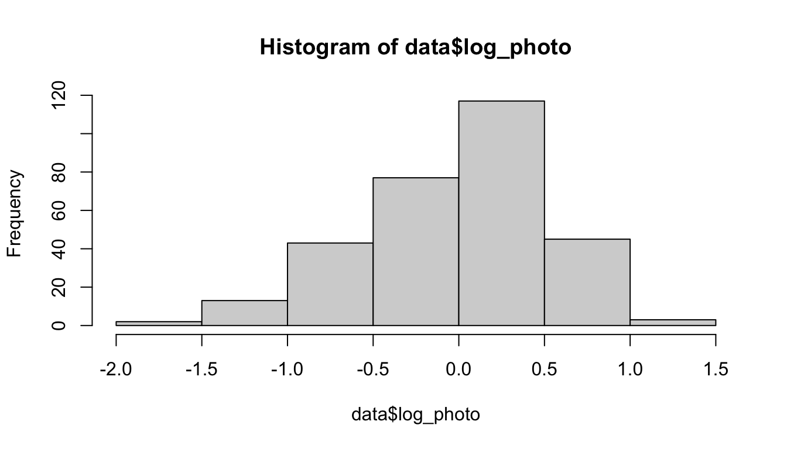
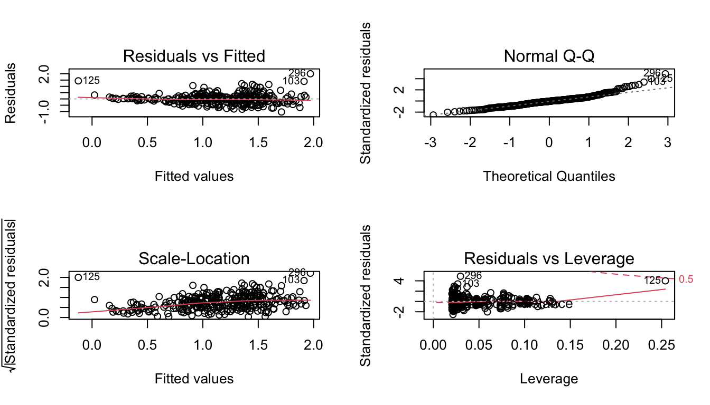
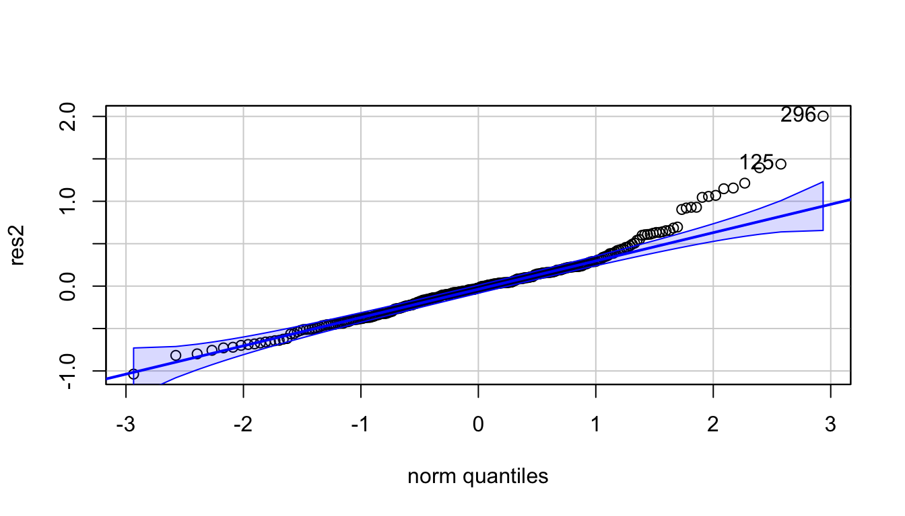
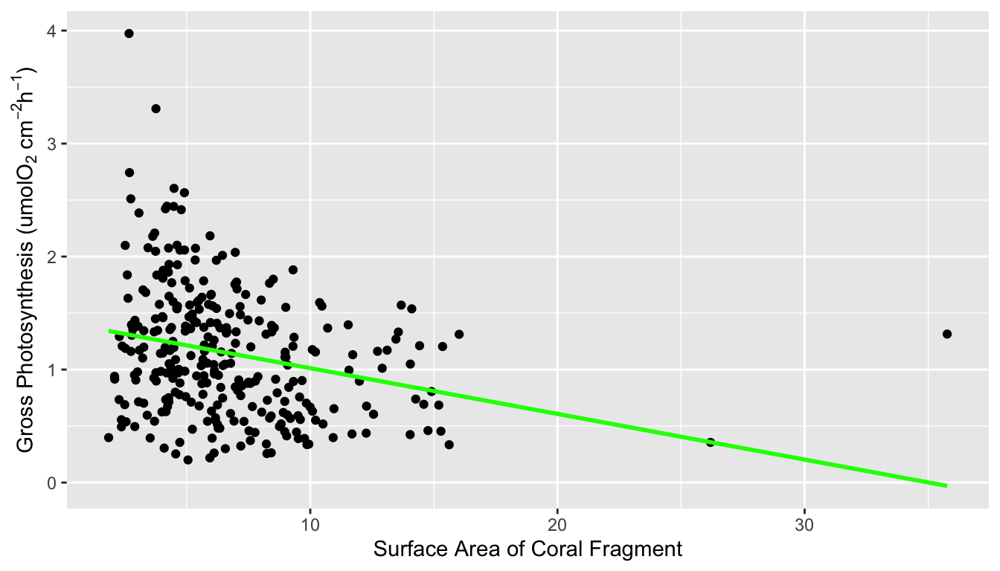

Increased carbon dioxide concentrations in seawater are causing ocean acidification, threatening corals by reducing their ability to build their calcium carbonate skeletons. This is a widely researched topic, but fewer studies have investigated the effect of ocean acidification on coral photosynthesis. This study uses data collected from sites with high and low carbon dioxide concentrations to address this question using statistical analyses. The results indicated that corals in seawater with high concentrations of carbon dioxide tended to have higher rates of gross photosynthesis, with variability among the coral species tested. Carbon dioxide concentration in seawater, coral species, and the size of coral fragment were all significant predictors of gross photosynthesis.
Ocean acidification refers to the process where increasing carbon dioxide (C02) levels in the atmosphere leads to the decrease of seawater pH and the modification of carbonate chemistry in seawater [1]. Much of the research surrounding ocean acidification and corals has focused on the carbonate chemistry aspect, because corals create their structures out of calcium carbonate [2]. Fewer studies have focused on the effects of C02 concentration on coral respiration and photosynthesis, although one study suggested that the increased cost of calcification may result in a positive correlation between aerobic respiration and ocean acidification conditions [6].
This study investigated the impact of ocean acidification conditions on coral respiration rates using volcanic C02 seeps as a proxy for future conditions. Twelve different coral species from Papua New Guinea were studied, with coral fragments collected both at the high C02 volcanic sites and at nearby reference sites. Net photosynthesis and dark respiration rates for each coral fragment were collected under a controlled environment using seawater from either a C02 seep site or reference site, and gross photosynthesis was then calculated using those values [1]. The data used in this report is from T. Biscéré et. al, and the original paper can be found at royalsocietypublishing.org [1]. There are 300 total observations in the data set and while the original data set has 11 variables, the cleaned data set was subsetted to only include the 4 variables being studied in this paper.
The research question this report is trying to answer is what influences the gross photosynthesis rate of tropical corals. The hypothesis of this study was that the respiration rate of corals will be higher in seawater with high C02 concentration and when the coral fragments have larger surface area, and that gross photosynthesis will vary depending on coral species. If the study shows that corals have increased respiration rates at high C02 concentrations, this could inform future research projects into protecting corals from increasing ocean acidification conditions.
Figure 1 shows a correlation plot of the ocean acidification data. Gross_photosynthesis is the response variable, while the other three variables are the predictor variables. Species and Site are both categorical variables, while surface area (SA) is a numeric variable. The histogram of the gross photosynthesis data in Figure 1 indicates that the data is right skewed, and therefore is not normal. The SA data also appears to be right skewed, which can be seen from the histogram in Figure 1 and the scatter plot in Figure 2. The boxplot in Figure 2 suggests that there are some outliers in the gross photosynthesis data when it is plotted against C02 concentration. The boxplot in Figure 3 of gross photosynthesis against coral species also indicates that outliers are present.
Figure 1. Scatter plot matrix with correlation values of the response variable, gross photosynthesis, and the predictor variables, coral species, site (C02 concentration of seawater), and surface area of coral fragment.
Plot on the left shows a scatter plot of gross photosynthesis against surface area of coral fragments. Plot on the right shows a box plot of gross photosynthesis of corals at high and low C02 concentrations of seawater.
Boxplot of gross photosynthesis of coral species
Two statistical methods were used to answer the question of whether coral species, surface area, or seawater C02 concentration are predictors of gross photosynthesis in corals. Because the data did not meet the assumptions of normality, non-parametric alternative tests were used. The first was the Wilcoxon test, which was used to compare the gross photosynthesis rates of corals in seawater with a low C02 concentration with those in seawater with a high C02 concentration. The second test was a general linear model that was used to test which variables are significant predictors of gross photosynthesis.
To test this hypothesis, a two-sample t-test could be used. A two-sample t-test assumes that the observations from each group represent a random sample from the population, that the residuals are normally distributed, and that the observations from the two groups have the same variance.
A Shapiro-Wilk test on the residuals of a linear model was used to test the assumption of normality, and the resulting p-value was 8.401e-08. Because this value was less than 0.05, the null hypothesis of the Shapiro-Wilk test that the data is normal was rejected, and the assumption of normality was not met. This test and a qqPlot of the residuals can be seen in Appendix 2.a.
A Levene’s test was used to test the assumption of equal variance. The p-value of this test was 0.06374, which is greater than 0.05 so we fail to reject the null hypothesis that the variances are unequal between the two groups. Because the assumption of normality was not met, a non-parametric test was required. Given the assumption of equal variances was met, the test used was the Wilcoxon test.
A statistical analysis for regression was used to test this hypothesis. A standard linear model assumes that the residuals of the model are normal and have equal variane. The assumption of normality was tested using a qqPlot and Shapiro-Wilk test, available in Appendix 2.b. The p-value of the Shapiro-Wilk test was 1.02e-08. Because this value was less than 0.05, the null hypothesis of the Shapiro-Wilk test that the data is normal was rejected, and the assumption of normality was not met.
Given the assumption of normality was not met, the non-parametric alternative of a generalized linear model (glm) was used. Because the data was not binary data or count data, the Gaussian family was used as opposed to a Binomial or Poisson glm. In order to determine which variables were good predictors of gross photosynthesis, a glm was fit with one variable each, with each combination of two variables, and a final glm with all three predictor variables. These models can be seen in Appendix 2b.
The Wilcoxon test showed that gross photosynthesis rates among corals are significantly different between high and low C02 concentrations in seawater. The Gaussian generalized linear model used for the second question showed that coral species, C02 concentration in seawater, and the size of coral fragment are all significant predictors of gross photosynthesis.
The p-value from the Wilcoxon test was 2.662e-06, less than 0.05. At the 5% significance level we reject the null hypothesis and conclude that gross photosynthesis rates among corals are significantly different between high and low C02 concentrations in seawater. From Figure 4 we can see that the rate of gross photosynthesis is higher at high concentrations of C02.
Boxplot of gross photosynthesis of corals at high and low C02 concentrations of seawater
AIC and BIC values are used to compare linear models in model selection. In both cases, the model with the smallest value is considered the best model by the test. BIC differs from AIC in that it places higher penalty on extra parameters. Despite this, both the AIC and BIC values were smallest for the glm in which all three predictor variables were included. This indicates that coral species, C02 concentration in seawater, and the size of coral fragment are all significant predictors of gross photosynthesis. In the summary of this glm, the results indicate that seven of the levels in the species variable are significant predictors of gross photosynthesis. This variation between species can also be seen in the boxplot in Figure 5.
| df | AIC | BIC | |
|---|---|---|---|
| glm_species_site_SA | 15 | 340.95 | 396.51 |
| glm_species_site | 14 | 392.53 | 444.38 |
| glm_site_SA | 4 | 463.65 | 478.47 |
| glm_species_SA | 14 | 392.65 | 444.50 |
| glm_site | 3 | 498.76 | 509.87 |
| glm_species | 13 | 418.80 | 466.95 |
| glm_SA | 3 | 498.73 | 509.84 |
Boxplot of gross photosynthesis of coral species in high and low C02 concentration seawater.
The results of the first test show that corals in high concentrations of C02 have a higher rate of gross photosynthesis than those at low concentrations. The results from the second test indicate that coral species, C02 concentration in seawater, and size of coral fragment are all significant predictors of gross photosynthesis. Together, both of these tests help answer the research question of what influences the gross photosynthesis rate of tropical corals. This is a promising result, because if gross photosynthesis for corals increases at high concentrations of C02, there may be more hope for their survival in increasing ocean acidification conditions. Further research could focus on the coral species that showed particularly high photosynthesis rates at sites with high C02 concentrations.
This report is limited by the fact that the data was not normal, so less powerful non-parametric tests had to be used. Also, some of the coral species were not found at all locations, which could have impacted the data. One improvement could have been to focus on the species of corals that were present at all locations in order to help remove the effect of potential variation that might occur between sites.
Biscéré, T., Zampighi, M., Lorrain, A., Jurriaans, S., Foggo, A., Houlbrèque, F., & Rodolfo-Metalpa, R. (2019). High pCO2 Promotes Coral Primary Production. Biology Letters, 15(7), 20180777. https://doi.org/10.1098/rsbl.2018.0777
Comeau, S., Carpenter, R., & Edmunds, P. (2016). Effects of pCO2 on Photosynthesis and Respiration of Tropical Scleractinian Corals and Calcified Algae. ICES Journal Of Marine Science, 74(4), 1092-1102. https://doi.org/10.1093/icesjms/fsv267
Fox, J., & Weisberg, S. (2019). An {R} Companion to Applied Regression, Third Edition. Thousand Oaks CA: Sage. URL: https://socialsciences.mcmaster.ca/jfox/Books/Companion/
Hao Zhu (2019). kableExtra: Construct Complex Table with ‘kable’ and Pipe Syntax. R package version 1.1.0. https://CRAN.R-project.org/package=kableExtra
H. Wickham. ggplot2: Elegant Graphics for Data Analysis. Springer-Verlag New York, 2016.
McCulloch, M., Falter, J., Trotter, J., & Montagna, P. (2012). Coral Resilience to Ocean Acidification and Global Warming Through pH Up-Regulation. Nature Climate Change, 2(8), 623-627. https://doi.org/10.1038/nclimate1473
Revelle, W. (2020) psych: Procedures for Personality and Psychological Research, Northwestern University, Evanston, Illinois, USA, https://CRAN.R-project.org/package=psych Version = 2.1.3,.
Wickham et al., (2019). Welcome to the tidyverse. Journal of Open Source Software, 4(43), 1686, https://doi.org/10.21105/joss.01686
Wickham, H., Hester, J., & Francois, R. (2018). readr: Read Rectangular Text Data. R package version 1.3.1. https://CRAN.R-project.org/package=readr
Yihui Xie (2020). knitr: A General-Purpose Package for Dynamic Report Generation in R. R package version 1.29.
#How many observations?
dim(data)## [1] 300 4#general data checking
summary(data)## Species Site gross_photosynthesis SA
## Length:300 Length:300 Min. :0.2001 Min. : 1.843
## Class :character Class :character 1st Qu.:0.7000 1st Qu.: 4.289
## Mode :character Mode :character Median :1.1059 Median : 5.953
## Mean :1.1448 Mean : 6.718
## 3rd Qu.:1.4666 3rd Qu.: 8.418
## Max. :3.9743 Max. :35.767#Check numeric variables for normality
par(mfrow=c(1,2))
hist(data$gross_photosynthesis, main="", xlab=expression("Gross Photosynthesis (umolO"[2]*" cm"^-2* "h"^-1*")"))
hist(data$SA, main="", xlab="Surface Area of Coral Fragments")
par(mfrow=c(1,1))
#both variables appear right skewed
shapiro.test(data$gross_photosynthesis) #p-value: 2.172e-08 -> not normal##
## Shapiro-Wilk normality test
##
## data: data$gross_photosynthesis
## W = 0.95161, p-value = 2.172e-08shapiro.test(data$SA) #p-value < 2.2e-16 -> not normal##
## Shapiro-Wilk normality test
##
## data: data$SA
## W = 0.81559, p-value < 2.2e-16par(mfrow=c(1,2))
qqPlot(data$gross_photosynthesis) #not normal## [1] 296 103qqPlot(data$SA) #not normal
## [1] 125 256par(mfrow=c(1,1))
#more numeric var investigation
pairs.panels(data[1:4]) #include as a fig
#numeric vars vs. categorical vars
par(mfrow=c(1,2)) #include as a fig
boxplot(gross_photosynthesis ~ Species, data=data, xlab="Gross Photosynthesis")
boxplot(gross_photosynthesis ~ Site, data=data, xlab="Gross Photosynthesis")
par(mfrow=c(1,1))
#based on all this, here are my findings:
#gross photosynthesis not normal, may need to be transformed
#little correlation between predictor variables
#both site and species seem like they may be predictors of gross photosynthesis
#site only has two levels, could run a two-sample test for the first "comparing means" test, will need to be non-parametric if gross photosynthesis cannot be transformed
#will run either a linear model or a glm to see what variables are most predictive of gross photosynthesis for my "predictive" test#goal: comparing means test - preferably a t-test but data may not be normal
#step 1: check assumptions of t-test
#indep data? probably
#normality
#equal variance
shapiro.test(data$gross_photosynthesis)##
## Shapiro-Wilk normality test
##
## data: data$gross_photosynthesis
## W = 0.95161, p-value = 2.172e-08fit <- lm(gross_photosynthesis~Site,data=data)
par(mfrow=c(2,2))
plot(fit) #data does not look normal
par(mfrow=c(1,1))
res <- fit$residuals
shapiro.test(res) #p-value: 8.401e-08 -> not normal##
## Shapiro-Wilk normality test
##
## data: res
## W = 0.9564, p-value = 8.401e-08qqPlot(res) #not normal
## [1] 296 103#try transforming the data to achieve normality
#log transform response variable
data$log_photo <- log(data$gross_photosynthesis)
hist(data$log_photo)
#Fit model
log_fit <- lm(log_photo~Site,data=data)
#Get residuals
log_res <- log_fit$residuals
#Test normality of model residuals
shapiro.test(log_res) #p-value of 1.117e-05 is less than 0.05, so we reject the null hypothesis that the residuals of the log transformed data is normal##
## Shapiro-Wilk normality test
##
## data: log_res
## W = 0.97142, p-value = 1.117e-05leveneTest(data$gross_photosynthesis, data$Site) #p-value: 0.06374 -> variances are equal## Warning in leveneTest.default(data$gross_photosynthesis, data$Site): data$Site
## coerced to factor.## Levene's Test for Homogeneity of Variance (center = median)
## Df F value Pr(>F)
## group 1 3.463 0.06374 .
## 298
## ---
## Signif. codes: 0 '***' 0.001 '**' 0.01 '*' 0.05 '.' 0.1 ' ' 1#the assumption of homogeneity of variance has been met, but the assumption of normality has not, and the log-transformation was unsuccessful in making the data normal
#will need to use a non-parametric test that does not have a normality assumption - Wilcoxon test
#step 2: wilcoxon test
wilcox.test(data$gross_photosynthesis ~ data$Site) #p-value: 2.662e-06 -> significant difference between gross photosynthesis at high and low C02 concentrations##
## Wilcoxon rank sum test with continuity correction
##
## data: data$gross_photosynthesis by data$Site
## W = 14720, p-value = 2.662e-06
## alternative hypothesis: true location shift is not equal to 0#step 4: make a nice ggplot figure to summarize these results, include as a fig
ggplot(data, aes(x = Site, y = gross_photosynthesis, color=Site)) +
geom_boxplot()+
xlab("Coral Species")+
ylab(expression("Gross Photosynthesis (umolO"[2]*" cm"^-2* "h"^-1*")"))+
scale_color_manual(values=c("orchid", "lightseagreen"))+ #set line colors
theme(text = element_text(size=14)) #goal: use model selection to see what variables are significant predictors of gross photosynthesis
#step 1: check assumptions of linear regression
#indep? probably
#normal residuals?
#equal variances?
fit2 <- lm(gross_photosynthesis ~ Site + Species + SA, data=data)
par(mfrow=c(2,2))
plot(fit2) #residuals not normal, variance may be increasing towards the right
par(mfrow=c(1,1))
res2 <- fit2$residuals
qqPlot(res2) #not normal
## [1] 296 125shapiro.test(res2) #p-value: 1.02e-08 -> residuals not normal##
## Shapiro-Wilk normality test
##
## data: res2
## W = 0.94881, p-value = 1.02e-08#will need to use a generalized linear model that does not have the same assumptions of a linear regression (non-parametric alternative)
#the data is not binomial or count data (would use a Poisson glm), so will use the a Gaussian glm
#step 2: run a glm for different combinations of variables
#glm with all three predictor variables
glm_species_site_SA <- glm(gross_photosynthesis ~ Species + Site + SA, data = data, family = "gaussian")
#glm with two predictor variables: species and site
glm_species_site <- glm(gross_photosynthesis ~ Species + Site, data = data, family = "gaussian")
#glm with two predictor variables: site and SA
glm_site_SA <- glm(gross_photosynthesis ~ Site + SA, data = data, family = "gaussian")
#glm with two predictor variables: species and SA
glm_species_SA <- glm(gross_photosynthesis ~ Species + SA, data = data, family = "gaussian")
#glm with one predictor variable: site
glm_site <- glm(gross_photosynthesis ~ Site, data = data, family = "gaussian")
#glm with one predictor variable: species
glm_species <- glm(gross_photosynthesis ~ Species, data = data, family = "gaussian")
#glm with one predictor variable: SA
glm_SA <- glm(gross_photosynthesis ~ SA, data = data, family = "gaussian")
#step 3: Assess model fit
#calculate AIC of each model
result <- AIC(glm_species_site_SA,glm_species_site,glm_site_SA, glm_species_SA, glm_site, glm_species, glm_SA) #this will create a dataframe whose rownames are the models, with columns for the df and AIC of each model
#add other metrics to the table
models <- list(glm_species_site_SA,glm_species_site,glm_site_SA, glm_species_SA, glm_site, glm_species, glm_SA)
result$BIC <- sapply(models, BIC) #add a column for BIC to the results
#Create a table with model comparisons
kable(result, digits = 2, align = "c") %>%
kable_styling(bootstrap_options = c("striped", "hover"))| df | AIC | BIC | |
|---|---|---|---|
| glm_species_site_SA | 15 | 340.95 | 396.51 |
| glm_species_site | 14 | 392.53 | 444.38 |
| glm_site_SA | 4 | 463.65 | 478.47 |
| glm_species_SA | 14 | 392.65 | 444.50 |
| glm_site | 3 | 498.76 | 509.87 |
| glm_species | 13 | 418.80 | 466.95 |
| glm_SA | 3 | 498.73 | 509.84 |
#The glm model with all three predictor variables has the lowest AIC and BIC score, indicating that it is the best model
#Site, species, and SA are all significant predictors of gross photosynthesis
#step 4: Closer look at selected glm
summary(glm_species_site_SA)##
## Call:
## glm(formula = gross_photosynthesis ~ Species + Site + SA, family = "gaussian",
## data = data)
##
## Deviance Residuals:
## Min 1Q Median 3Q Max
## -1.03716 -0.26156 -0.02249 0.18857 2.00397
##
## Coefficients:
## Estimate Std. Error t value Pr(>|t|)
## (Intercept) 1.206297 0.162754 7.412 1.41e-12 ***
## SpeciesAcropora nana 0.802639 0.171394 4.683 4.37e-06 ***
## SpeciesAcropora tenuis 0.475888 0.162262 2.933 0.003630 **
## SpeciesDipsastraea pallida 0.248237 0.187293 1.325 0.186098
## SpeciesFavites halicora -0.175808 0.193698 -0.908 0.364833
## SpeciesFavites pentagona -0.332637 0.197803 -1.682 0.093727 .
## SpeciesGalaxea fascicularis 0.006523 0.198006 0.033 0.973742
## SpeciesHeliopora coerulea 0.222325 0.185848 1.196 0.232580
## SpeciesPocillopora damicornis 0.655759 0.175616 3.734 0.000227 ***
## SpeciesPocillopora verrucosa 0.903487 0.157285 5.744 2.36e-08 ***
## SpeciesPorites cylindrica 0.401746 0.158791 2.530 0.011942 *
## SpeciesSeriatopora hystrix 0.538651 0.160178 3.363 0.000877 ***
## SiteLow -0.374032 0.049957 -7.487 8.77e-13 ***
## SA -0.052254 0.006988 -7.478 9.29e-13 ***
## ---
## Signif. codes: 0 '***' 0.001 '**' 0.01 '*' 0.05 '.' 0.1 ' ' 1
##
## (Dispersion parameter for gaussian family taken to be 0.173154)
##
## Null deviance: 97.414 on 299 degrees of freedom
## Residual deviance: 49.522 on 286 degrees of freedom
## AIC: 340.95
##
## Number of Fisher Scoring iterations: 2#step 5: make a pretty graph to summarize findings
ggplot(data, aes(x=Species, y=gross_photosynthesis, color = Site))+
geom_boxplot()+
theme(axis.text.x = element_text(angle = 45, vjust = 0.6)) +
labs(color = "C02 Concentration")+
ylab(expression("Gross Photosynthesis (umolO"[2]*" cm"^-2* "h"^-1*")"))+
xlab("Coral Species")ggplot(data, aes(x = SA, y = gross_photosynthesis)) +
geom_point()+
geom_smooth(method='lm', se = FALSE, col = 'green')+
ylab(expression("Gross Photosynthesis (umolO"[2]*" cm"^-2* "h"^-1*")"))+
xlab("Surface Area of Coral Fragment")## `geom_smooth()` using formula 'y ~ x'